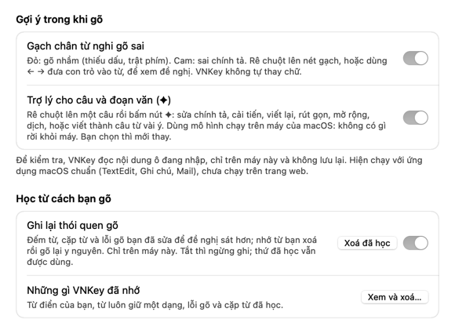

Cách VNKey hoạt động
How VNKey Works
Bốn ý chính đằng sau bản viết lại 2.0.
The four ideas behind the 2.0 rewrite.
Theo dõi thứ tự phím, sửa bằng xoá lùi
Keystroke Tracking and Backspace Correction
VNKey chặn phím toàn hệ thống, ghi nhớ từng phím của từ đang gõ và phím nào tạo ra chữ nào. Khi cần đổi chữ, nó gửi đúng số phím xoá lùi rồi chèn chữ mới, nên không có vùng soạn thảo tạm và không có gạch chân. Vì giữ nguyên chuỗi phím gốc, VNKey luôn trả lại được đúng những gì bạn gõ.
VNKey taps keys system-wide and remembers every key of the current word and which key produced which letter. To change text it sends exactly the right number of backspaces and inserts the new text, so there is no marked-text region and no underline. Because the original key sequence is kept, VNKey can always give back precisely what you typed.

Việt và Anh trong cùng một câu
Vietnamese and English in One Sentence
Khi bạn kết thúc một từ, VNKey quyết định giữ tiếng Việt hay trả lại phím gốc dựa trên luật cấu tạo âm tiết, từ điển Việt và Anh có sẵn của macOS, và các từ bạn vừa gõ. Sau @ # / . _ hoặc chữ số, nó coi là code và không đụng tới. Nhấn ⌃⌥Z bất cứ lúc nào để đổi từ vừa gõ; VNKey sẽ nhớ lựa chọn đó.
When you finish a word, VNKey decides between keeping the Vietnamese form and restoring the raw keys using syllable rules, the Vietnamese and English dictionaries built into macOS, and the words you just typed. After @ # / . _ or a digit it treats the text as code and leaves it alone. Press ⌃⌥Z at any time to flip the last word; VNKey remembers that choice.

Gợi ý thay vì tự sửa, và học từ chính bạn
Suggestions Instead of Auto-Fix, Learned From You
VNKey đọc chữ trong ô bạn đang nhập (chỉ trên máy, không lưu, không bao giờ đọc ô mật khẩu) và gạch chân từ nghi sai. Đề nghị được xếp theo từ đứng cạnh, nhờ bảng khoảng 106.000 cặp âm tiết và từ điển 48.000 từ ghép: “tiếng viêt” đề nghị “việt”, còn “bài viêt” đề nghị “viết”. Cặp từ và lỗi gõ của chính bạn được ưu tiên trước. Bảng đếm chỉ lưu trên máy, không chứa câu bạn gõ, và xoá được bất cứ lúc nào.
VNKey reads the text of the field you are typing in (on your Mac only, storing nothing, and never a password field) and underlines words that look wrong. Suggestions are ranked by the neighbouring word, using a table of about 106,000 syllable pairs and a dictionary of 48,000 compounds: “tiếng viêt” suggests “việt” while “bài viêt” suggests “viết”. Your own word pairs and typos come first. The counts stay on your Mac, contain no sentences, and can be deleted at any time.

Mẹo riêng cho từng ứng dụng
Per-App Handling
Mỗi ứng dụng nhận phím theo cách riêng, nên VNKey chọn cách gửi phím theo ô đang nhập: thanh địa chỉ trình duyệt, Spotlight và ô văn bản thường được xử lý khác nhau. Nó cũng nhớ chế độ Việt/Anh cho từng ứng dụng, và bạn chọn được những ứng dụng luôn bắt đầu ở chế độ Anh.
Every app receives keys a little differently, so VNKey picks how to send text based on the focused field: browser address bars, Spotlight, and ordinary text fields are each handled differently. It also remembers the Vietnamese/English mode per app, and you choose which apps always start in English.